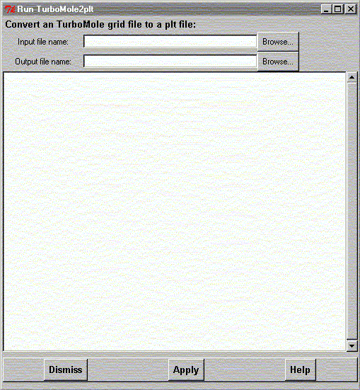

**************************************************************************
Run turbomole2plt program widget
Leif Laaksonen CSC 1999
**************************************************************************
Run the TurboMole2plt program to convert a TurboMole grid file into the plt file format used by gOpenMol. The TurboMole grid file can then be displayed using the gOpenMol contour utilities
Write the input and output file names or click the Browse buttons to define the file names. The press the Apply button to do the conversion.

Line command: can't be run from gOpenMol line mode. Use the Unix/Dos command line mode
**************************************************************************
LUL/1999
**************************************************************************